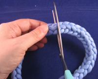
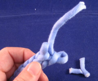
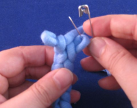
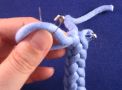
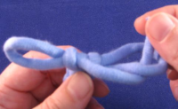
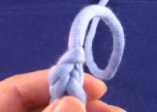

Om du skär av en slyngad snodd, den börjar repa upp sig om inte man gör någonting till änden. Man kan naturligtvis knyta ändan eller doppa den i lim. Lite elegantare är det att vira ett tunt tråd runt ändan, see Common Whipping. Men om ditt garn är av lite tjockare laget (eller du har små fingrar och gott syn), du kan också avsluta de skurna ändarna på samma sätt som du använder när du slynger snodden.
Normalt är det lättare att slynga snoddarna till den rätta längden än att pilla med dem efteråt. Om du behöver 3 x 1,5 m snodd, är det en bra idé att slynga tre 1,5-meters snoddar än en 5-meters snodd, om du inte njuter av att pilla med ändarna efteråt.
Men om du vill skära en snodd och avsluta ändarna, behöver du en sax, två säkerhetsnålar och en nål (om garnet är tunt) eller en stoppnål eller tunn sticka; i varje fall något smått och ganska vasst. Även en cocktailsticka eller en gaffel kan hjälpa om du inte hittar något annat lämpligt.
Om du behöver en snodd av en viss längd, markera på något sätt (t.ex. med en tredje säkerhetsnål) stället där snodden borde sluta. Om du skär snodden i flera kortare snoddar, märk att skärning och avslutning förkortar ändarna med ca 5 cm.
|  | Skär av snodden med saxen. Om du behöver en viss längd, skär 5 cm ovanför slutmärket. |
|  | Ta den nyskärda ändan och nålen/stickan och använd den för att pilla ut alla lösa garnbitar. Efter det borde din ända har två små öglor, den ena lite längre ner än den andra, och en garnända. Dra försiktigt i garnet så att snodden repas upp för en bit och garnet blir längre. Om du gör en bestämd längd, repa upp snodden fram till att du når märket vid ändpunkten. |
|  | Sätt ner snodden som om den var på en slynggaffel. till vänster öglan som är lite högre upp, till höger den andra öglan och garnet (det du just drog i). Sätt en säkerhetsnål genom öglan till höger. |
|  | Gently pull the left loop bigger. Try to get the extra yarn from the yarn end, not from the right loop. Fasten the other safety pin through the left loop you just made bigger. |
| Gently pull the right loop bigger. The extra yarn comes from the left loop, try not to pull it too small (although the safety pin will stop you from pulling too far). | |
|  | Remove the safety pin from the right loop. Take the yarn end and put it through the right loop. |
| Pull the front side of the left loop so that the right loop tightens around the yarn end. | |
 |
Remove the safety pin from the left loop. Put the yarn end through the loop. Pull the yarn end until the left loop tightens around the yarn. |
|  | You have finished off the end and it won't unravel. |
{kind=link}
{kind=link}
{kind=link}
{kind=link}
{kind=link}
{kind=link}
(Click the photos to see bigger versions of them.)
Repeat with the other cut cord end.